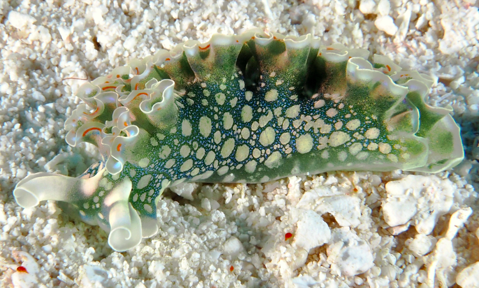

Маленький морской слизень питается одним видом водорослей в заливах вдоль побережья. Слизни
производят тысячи микроскопических личинок, которые уплывают в океан. Эти личинки должны в конце концов найти и
поселиться на участке водорослей, а затем превратиться в маленьких слизней и начать свою взрослую жизнь.
Эти крошечные личинки могут "учуять" участок водорослей, когда они проплывают над ним в воде, обнаруживая
химические вещества, которые медленно вымываются из водорослей. Был проведен эксперимент, задача которого была выяснить,
изменяется ли способность личинок обнаруживать участок водорослей во время прилива. Во время отлива водоросли
впитывают небольшие лужицы воды, которые становятся очень концентрированными, с "запахом водорослей". Гипотеза заключалась
в том, что когда прилив сначала накрывает водоросли, вода в бассейнах смешивается с поступающей океанской водой и
служит сильным сигналом для личинок опуститься на дно и найти водоросли. Позднее, когда запах водорослей разбавится
поднимающейся водой прилива, личинки будут менее способны обнаружить водоросли, проплывая над ними.
Чтобы проверить эту гипотезу, была взята проба воды с помощью шприца над участком водорослей, начиная с "времени 0",
когда поднимающиеся воды прилива первоначально покрывали водоросли. Затем отбиралась проба воды таким же образом каждые 5
минут в течение получаса, по мере того как уровень воды поднимался все выше и выше из-за наступающего прилива. Затем
измерили способность личинок обнаруживать химические вещества из водорослей с помощью лабораторного анализа, измеряя процент
личинок в данной пробе воды, которые опустились на дно и претерпели метаморфозу, превратившись в маленького слизня.
Использовались 6 копий для каждого образца воды (т.е. для каждой временной точки), а также образец воды, собранный
вдали от участка водорослей, в качестве отрицательного контроля. Задача этого экспиремента статистически проверить, наблюдается ли значительно
более высокий уровень метаморфоза в первом или второи образцах воды, когда "запах водорослей" должен был быть наиболее
концентрированным над водорослями, по сравнению с последующими временными точками, когда запах должен был быть разбавлен
приливом.
Вот данные, где каждая строка представляет собой образец воды.
В первом столбце указано время взятия образца (измеряется в минутах с начала прилива). Второе число - это процент личинок, прошедших метаморфоз (что является функцией их
способности обнаруживать химические вещества из водорослей). Времена со значением 99 - "отрицательный контроль".